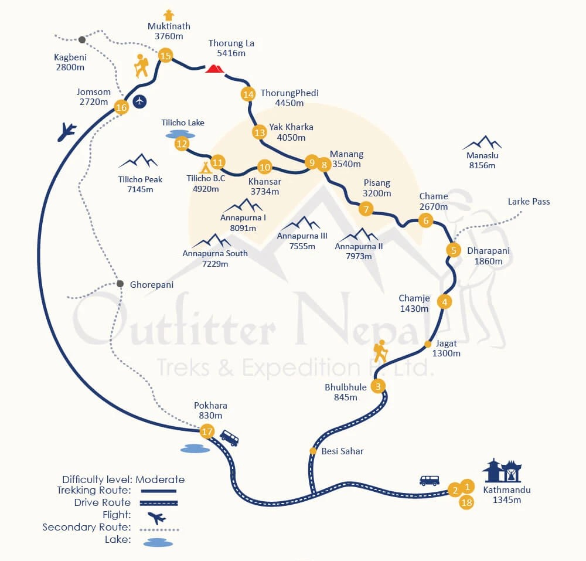

Drive from Kathmandu to Bhulbhule
Early in the morning, you will begin driving towards Bhulbhule along the Kathmandu-Pokhara highway.
The drive will take you to Dumre from where the route follows a narrow path alongside Marsyangdi River
and reach Besi Sahar and continue towards Bhulbhule.
Trek from Bhulbhele to Chamje
Today is the first day of the trek. The trail follows a flat path and ascends steeply to a sheer cliff
above 200 to 300 meters above the riverbed. Further, you descend and reach Jagat. From here, the trail begins
to observe small ups and down to Chamje through the forests.
Trek from Chamje to Dharapani
The trail descends to a river and crosses a suspension bridge. Further, you ascend to Sattale (1,550 m) and continue
trekking enjoying beautiful views of rivers. Climbing the zigzag path to the top of the hill, you reach Tal. From Tal,
walk through the narrow high windy path and reach Karte. The trail then descends to the river and crossing a suspension
bridge, you reach Dharapani.
Trek from Dharapani to Chame
You will begin trekking through small villages and come across the Marsyangdi River. Enjoying stunning views of Annapurna
II, you arrive at Bagarchhap. From here, you ascend through lush forests of oak and pine and reach Danaque. You will then
cross a small wooden bridge and ascend to Chame.
Trek from Chame to Pisang
You will begin trekking along with looking over the superb view of Lamjung Himal. The trail ascends to a huge apple orchard
and further passes through the pine & fir forest. You will climb to a high rocky area from were following a steep path you
reach Bhratang. The trail then ascends, crosses a few bridges, passes through dense forests, and finally leads you to Pisang.
Trek from Pisang to Manang
Leaving Pisang behind, you ascend to a steep ridge from where you can see stunning views of Tilicho Peak and Manang Valley.
The trail then descends to Humde and move towards the Sabje Khola Valley. Crossing a wooden bridge over Marsyangdi Khola, you
reach Mungji. Cultivated fields appear on both sides of the path, and off to the right, below a craggy mountain, you will see the
village of Braga. A short steep climb from here and you reach Manang.
Rest day at Manang for acclimatization
This is a rest day for you to acclimate your body with the increased altitude. You will explore the villages and go on a short
excursion. Crossing a river, you can reach a point where a huge icefall can be seen coming down from Annapurna Himalayas. Or,
you can ascend to a village to see a wonderful view of the Annapurna range and Manang Valley. There is also a Himalayan Rescue
Association [HRA] aid post in the village, which makes an interesting & educational visit. Moreover, you can visit Gangapurna
Glacier Lake as well.
Trek from Manang to Khansar
Leaving the main Annapurna Circuit route, you cross a bridge over Marshyangdi Khola. From here, following a stream, you head
towards Khansar.
Trek to Tilicho Base Camp
After having a warm breakfast, you begin ascending towards Tilicho Base Camp. The trail will be mostly ascending through a rugged
path. Upon reaching the base camp, you can see amazing views of the Himalayan mountains.
Trek to Tilicho lake - visit the Lake
Wake up early in the morning and have breakfast. After that, continue trekking towards the Tilicho Lake. The trek will be short
today. Upon reaching the lake, you will get to see an unbelievable view of nature. Surrounded by high snow-capped peaks, Tilicho
Lake sits calmly.
Trek from Tilicho Base Camp To Yak kharka
After having breakfast, you will begin trekking towards Yakkharka. There will be a few ascends and descends before reaching
Yakkharka. It is an open meadow, where you will see a few lodges and herders.
Trek from Yak Kharka to Thorong Phedi
The trail slowly ascends to a ridge and descends to the Marsyangdi River. Crossing a wooden bridge, you will climb up.
Further, following a narrow trail, you cross an unstable spree slope and descend to Thorung Phedi.
Trek from Thorong Phedi to Muktinath via Thorong La
The trek begins early in the morning. Ascending in a steep path, you reach the top of the Thorong La Pass marked with
chortens and colorful prayer flags. From here, the trail descends to one of the holiest sites of Hindus and Buddhist followers,
Muktinath Temple.
Trek from Muktinath to Jomsom
Walking along the bank of the Kali Gandaki gorge, you pass through the arid area to reach Jomsom. As for your knowledge,
Kali Gandaki gorge is the deepest gorge in the world.
Early morning flight from Jomsom to Pokhara
Today, you will take an early morning flight to Pokhara. Upon reaching Pokhara, you will head to the hotel. Rest of the day
free to explore around or rest.
Drive from Pokhara to Kathmandu
Taking a tourist bus, you drive back to Kathmandu. The drive will be long and scenic.
If everything is planned out, you will return to Kathmandu on sixteen day.